Por qué este estudio
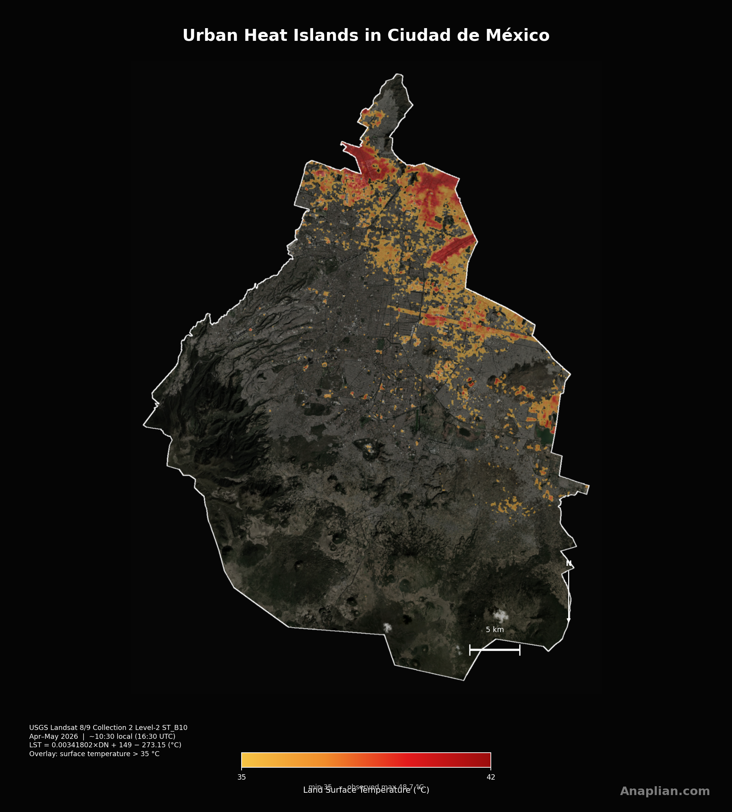
El incremento de la temperatura media del planeta agrava la vulnerabilidad a las temperaturas excesivas. No se trata solo de un grado más en el promedio global: esa alza empuja más días hacia umbrales peligrosos para la salud, el trabajo al aire libre y las redes de agua y energía. En las ciudades el riesgo se concentra. El asfalto, el concreto, los techos oscuros y el metal absorben gran parte de la radiación solar y la devuelven como calor; a diferencia de un árbol o un suelo húmedo, casi no evaporan agua ni dan sombra. Las calles estrechas y los edificios altos forman cañones que atrapan el aire caliente, y el tráfico y los aires acondicionados suman más energía al entorno. El resultado son islas de calor: estacionamientos, naves, avenidas y cubiertas donde la superficie llega a temperaturas que el cuerpo no tolera si se está expuesto.
Con imágenes de los satélites Landsat 8 y Landsat 9 mapeamos, en la Ciudad de México, las áreas urbanas con los picos más altos de temperatura de superficie. Usamos 14 escenas de abril y mayo de 2026, tomadas hacia las 10:30 de la mañana, hora local, con cielo relativamente despejado. El sensor térmico —banda 10 del infrarrojo, entre 10,6 y 11,2 micrómetros— estima el calor del suelo, los techos y el pavimento, no el del aire a la sombra. En paralelo, el NDVI —un índice de verdor a partir del rojo y el infrarrojo cercano— muestra dónde hay vegetación densa. La temperatura de la ciudad se compara con la media de las zonas rurales y boscosas del sur-poniente (suelo de conservación). El contraste es nítido: Azcapotzalco alcanza picos de 60.9 °C en superficie, mientras La Magdalena Contreras y Cuajimalpa de Morelos permanecen cerca o por debajo de esa referencia vegetal.
Esos picos no son un episodio aislado: con más olas de calor y más superficie impermeable, tienden a empeorar. Por eso sirven para identificar áreas de intervención. El urbanismo táctico permite probar, en semanas, sombras temporales, pintura de alto albedo en patios escolares o calles de juego, y banquetas más permeables, sin esperar un megaproyecto. La vegetación es la palanca más persistente: un árbol intercepta el sol, refresca el aire por transpiración y, como se ve en los mapas de NDVI, las colonias más verdes coinciden con superficies más frescas. Corredores de sombra, camellones arbolados, azoteas y muros verdes, y la protección del suelo de conservación del sur, reducen la carga térmica. Otras medidas suman: techos y pavimentos fríos, recuperar agua en chinampas y parques, limitar el estacionamiento descubierto y priorizar a quienes viven junto a las manchas más calientes —adultos mayores, infancia, trabajo al aire libre—. El dato satelital no sustituye el diseño local; señala dónde conviene actuar primero.
En la Ciudad de México, las superficies urbanas más compactas del oriente y el centro se calientan claramente más que el bosque del sur-poniente. Venustiano Carranza tiene el promedio más alto (43.9 °C) y Azcapotzalco el pico más extremo (60.9 °C). La Magdalena Contreras, con más vegetación, queda 1.0 °C por debajo de esa referencia rural.
1. La ciudad, con las superficies más calientes a la vista
2. Vegetación y calor, lado a lado

3. Máximas y promedios por alcaldía
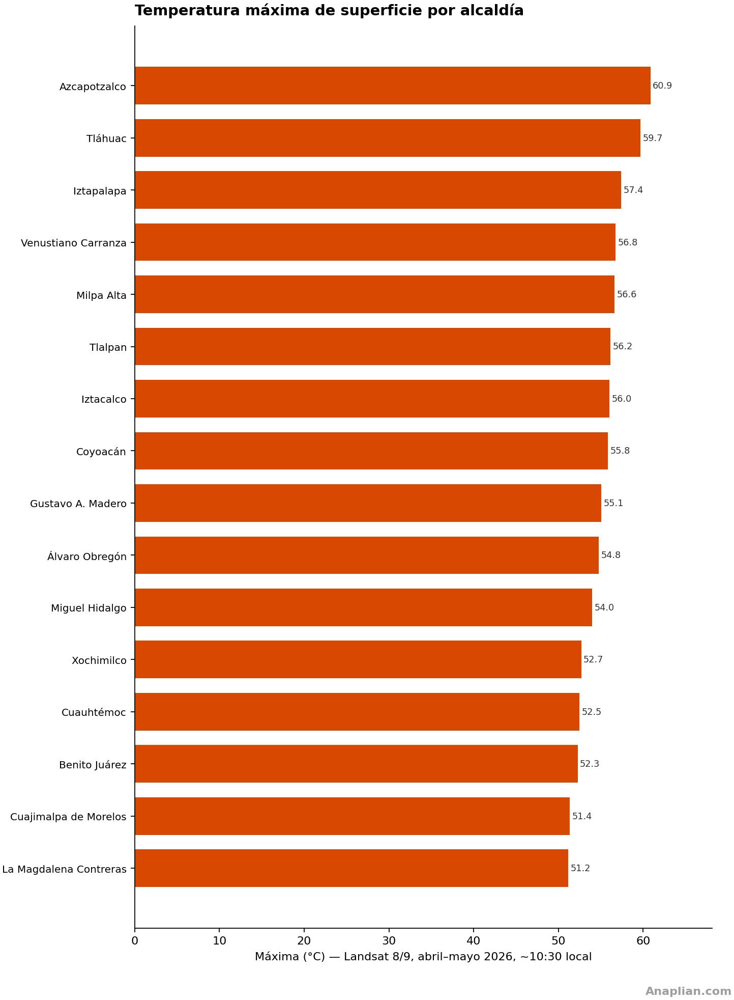
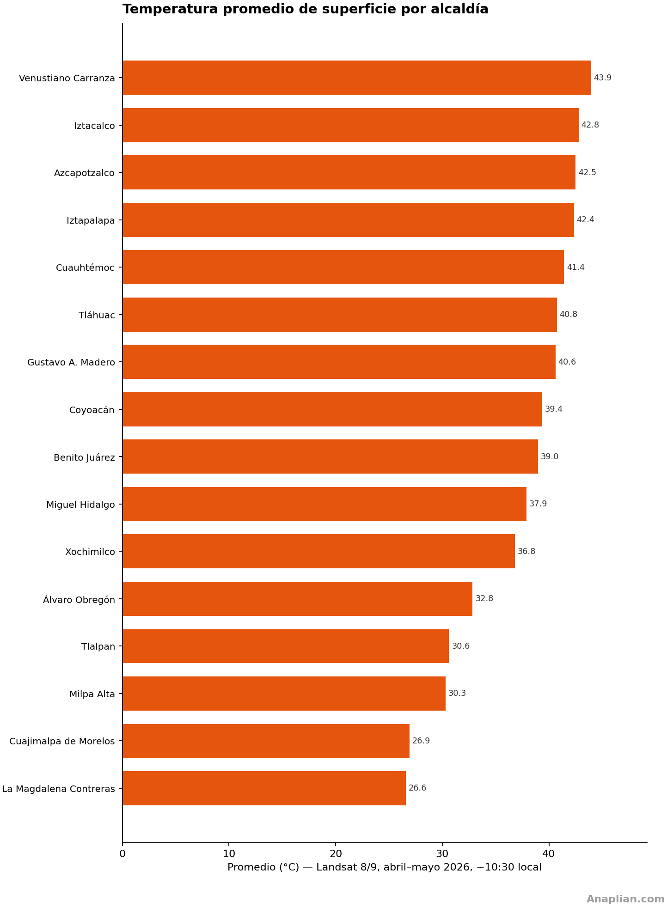
Cómo se hizo
Este reporte se basa en 14 imágenes de los satélites Landsat 8 y Landsat 9 (Colección 2, nivel 2) adquiridas entre el 1 de abril y el 31 de mayo de 2026. Ese periodo de dos meses de primavera fue el que mejor cubrió la ciudad con cielo relativamente despejado; un recorte de tres meses (marzo a mayo) se evaluó, pero abril y mayo ofrecen un retrato más limpio de 2026. Los satélites cruzan el Valle de México hacia las 10:30 de la mañana, hora local (cerca de las 16:30 UTC). Lo que se muestra no es la temperatura del aire a la sombra, sino la de la superficie: techos, asfalto, suelo desnudo y vegetación. Por eso un techo o un estacionamiento puede marcar más de 50 °C cuando el aire ronda los 25 °C. La temperatura se calculó con la banda 10 del infrarrojo térmico (unos 10,6 a 11,2 micrómetros). El verdor se midió con el NDVI, un índice que compara la luz roja y la del infrarrojo cercano: la vegetación sana refleja poco el rojo y mucho el infrarrojo cercano, y aparece en verde oscuro en el mapa de al lado. La columna de diferencia resta 27.6 °C, que es la temperatura media de las zonas vegetales y rurales del sur y poniente de la ciudad —suelo de conservación con bosque y poca urbanización, sobre todo en La Magdalena Contreras, Cuajimalpa de Morelos, Tlalpan y Milpa Alta—, identificadas con el mapa global de asentamientos humanos de 2020 (clases rurales, sin agua).
Temperaturas por alcaldía
Diferencia = promedio de la alcaldía menos 27.6 °C de las zonas vegetales del sur-poniente.
| Alcaldía | Máxima (°C) | Promedio (°C) | Diferencia vs zona vegetal (°C) |
|---|---|---|---|
| Venustiano Carranza | 56.8 | 43.9 | +16.4 |
| Iztacalco | 56.0 | 42.8 | +15.2 |
| Azcapotzalco | 60.9 | 42.5 | +14.9 |
| Iztapalapa | 57.4 | 42.4 | +14.8 |
| Cuauhtémoc | 52.5 | 41.4 | +13.8 |
| Tláhuac | 59.7 | 40.8 | +13.2 |
| Gustavo A. Madero | 55.1 | 40.6 | +13.0 |
| Coyoacán | 55.8 | 39.4 | +11.8 |
| Benito Juárez | 52.3 | 39.0 | +11.4 |
| Miguel Hidalgo | 54.0 | 37.9 | +10.3 |
| Xochimilco | 52.7 | 36.8 | +9.2 |
| Álvaro Obregón | 54.8 | 32.8 | +5.3 |
| Tlalpan | 56.2 | 30.6 | +3.0 |
| Milpa Alta | 56.6 | 30.3 | +2.7 |
| Cuajimalpa de Morelos | 51.4 | 26.9 | -0.6 |
| La Magdalena Contreras | 51.2 | 26.6 | -1.0 |
Alcaldías: islas de calor con transparencia (corte 38 °C)
Mismas escenas Landsat; se colorean solo las superficies por encima de 38 °C, en semitransparencia sobre la imagen satelital. Miniaturas a tamaño reducido, seis por bloque.
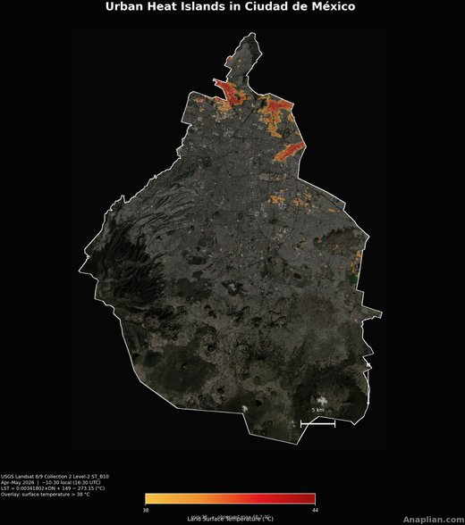
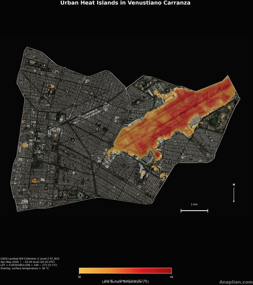
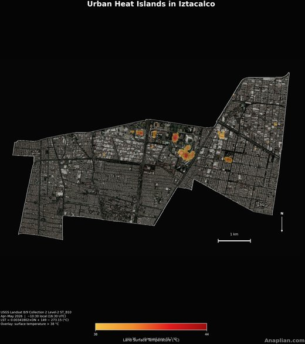
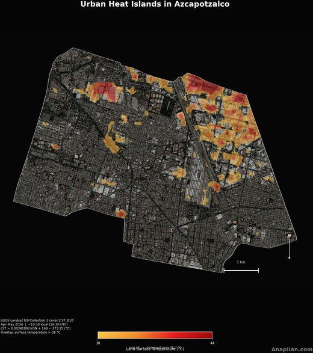
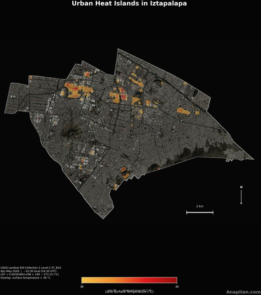
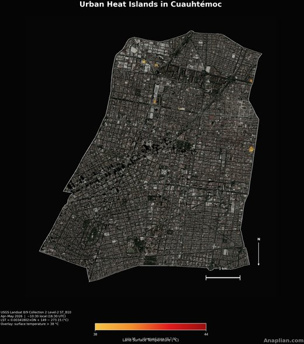
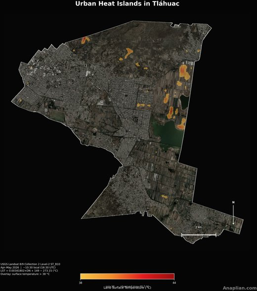
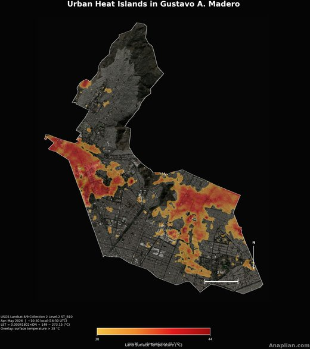
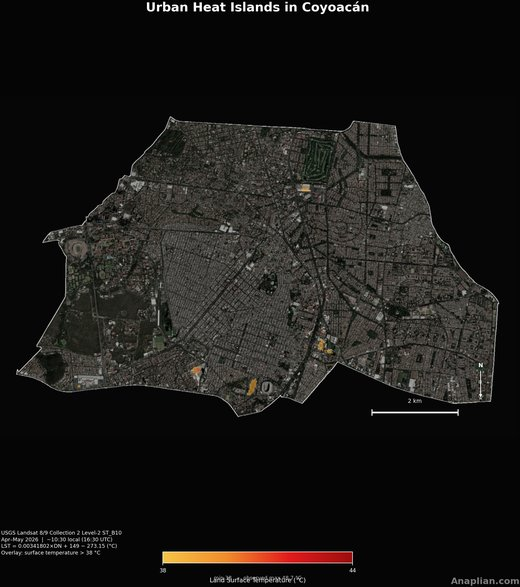
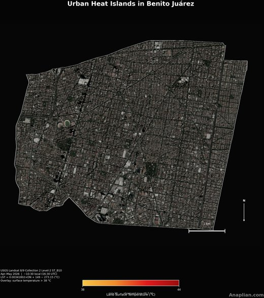
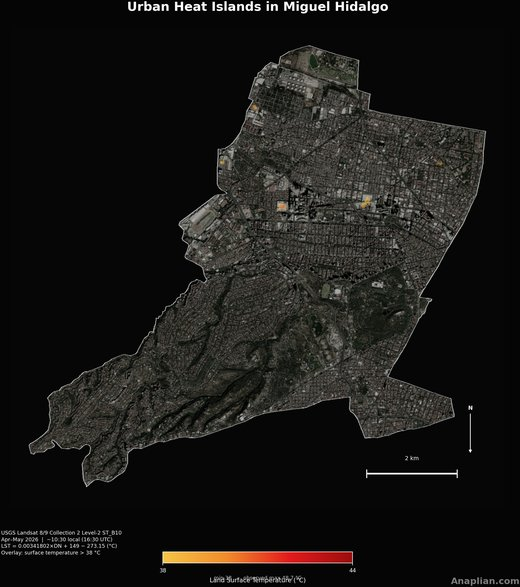
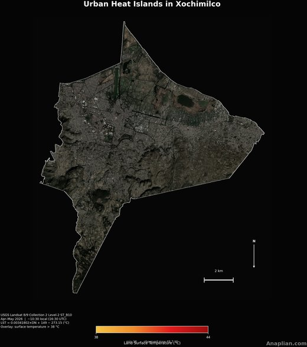
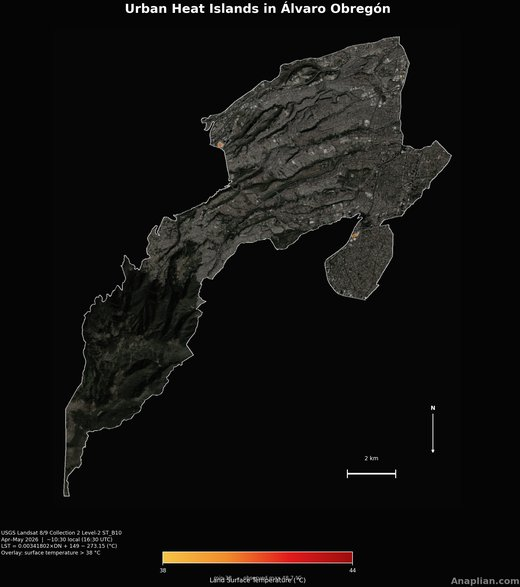
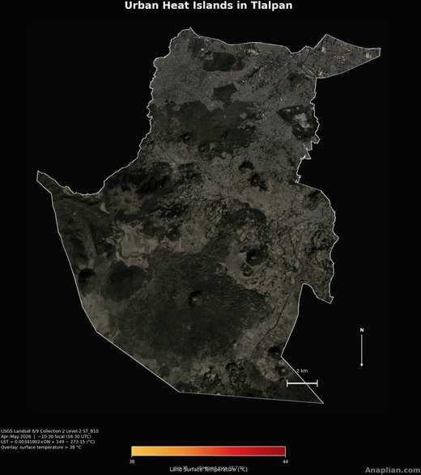
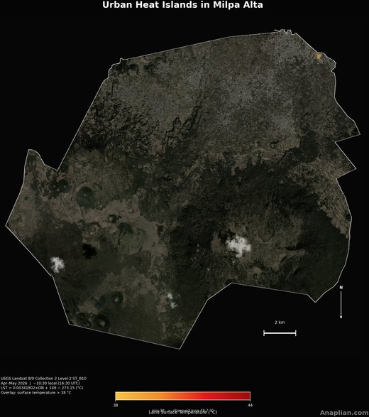
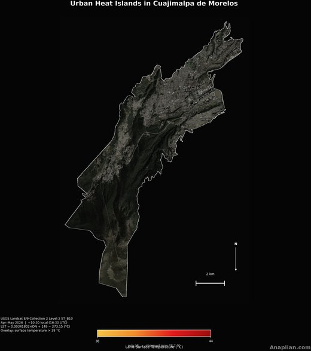
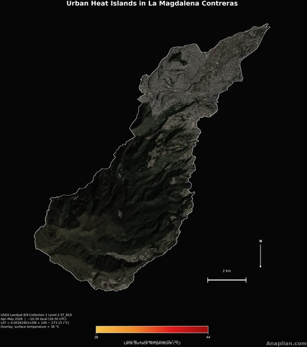